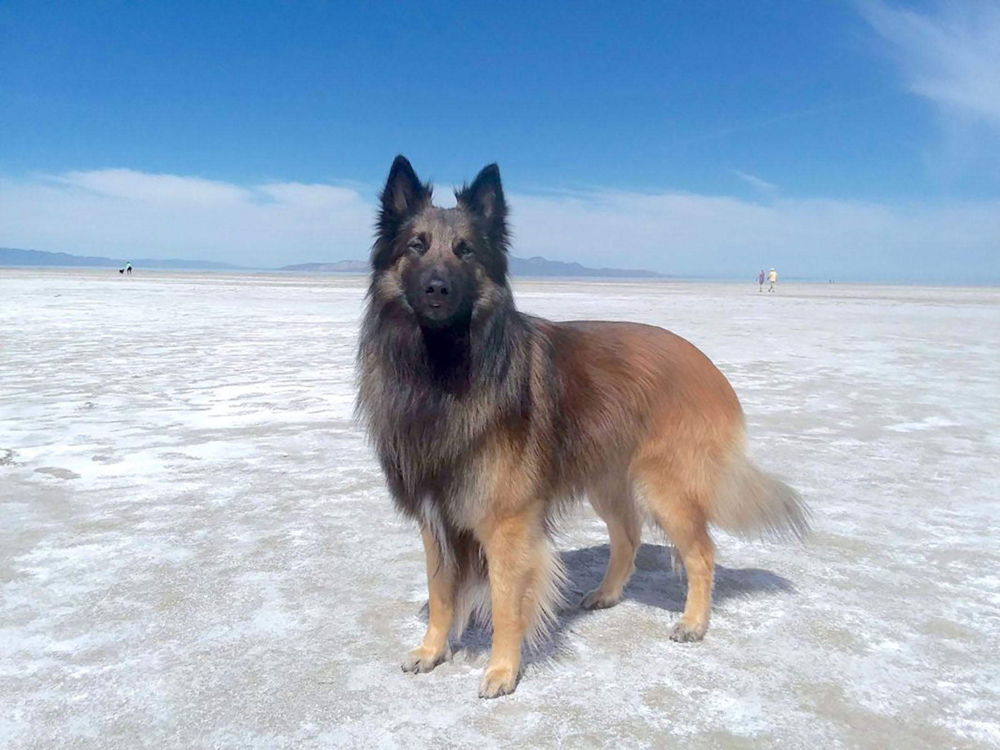

Centuries of breeding have reshaped dog brains—here’s how
The role for which a dog was bred—say retrieving birds—is reflected in their brain structure, according to a study of 33 breeds.
There are hundreds of dog breeds around the world, from the teensy chihuahua to the massive Saint Bernard—all thanks to centuries of selective breeding by humans. With such a wide range of canine sizes and temperaments, it’s no surprise that, in the process, we have reshaped their brains as well as their bodies.
A new study performed MRI scans on 33 breeds and discovered how a dog was bred is reflected in their brain structure. (Read “How to build a dog” in National Geographic magazine.)
For instance, dogs bred to be small—say the lhasa apso—have round heads with similarly round brains that take up most of their skull. A larger breed like a golden retriever has a long, narrow head, and thus a more elongated brain that doesn't fill all of the skull space.

Back to Course Home Page